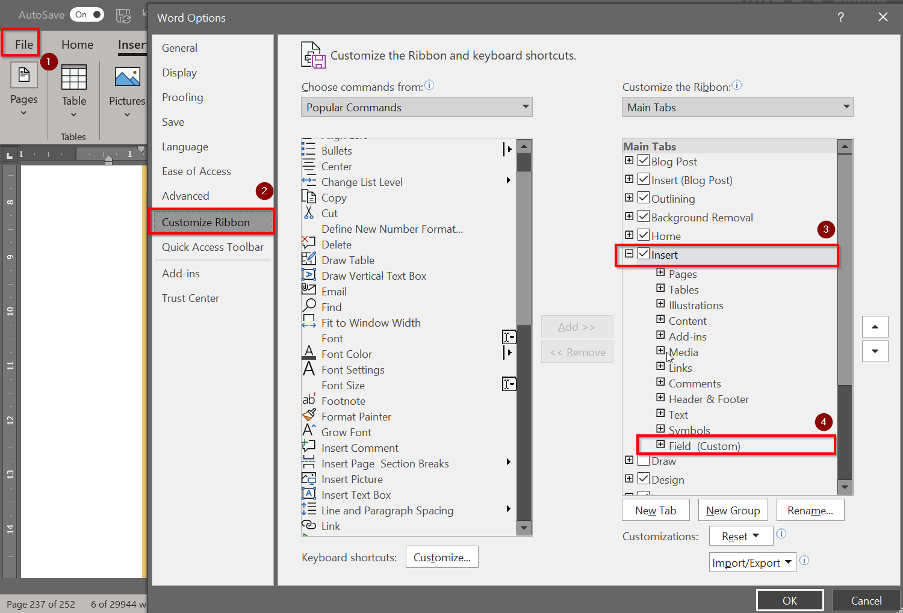
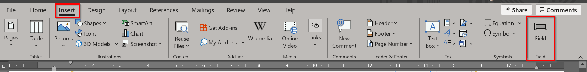
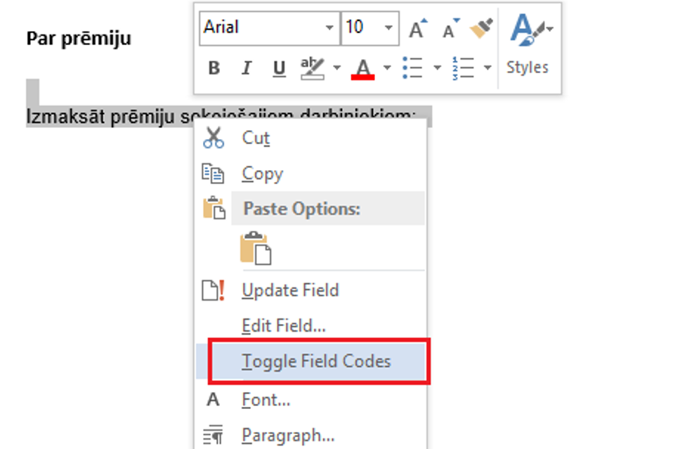
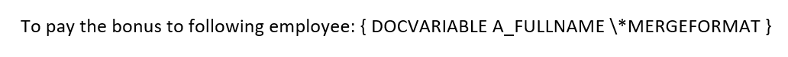
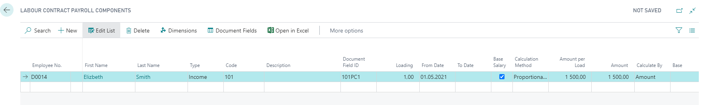

Creating Documents
Setup in MS Word
To be able to create a template in Microsoft Word, a new button Field must be added to the toolbar. File ( ) – Options – Customize Ribbon (
) – Options – Customize Ribbon ( ) – under the section Insert (
) – under the section Insert ( ) – left click of the mouse Add New Group – Name it into Field (
) – left click of the mouse Add New Group – Name it into Field ( ) – add the function Field
) – add the function Field

The already added button to the system appears as follows:

Document fields in Business Central
In order to be able to create a template, the fields are developed to the system, what are used to enter the variable values in the user defined template. A list Document Fields includes following fields:
- Code – field code;
- Reference – a list in the system from where the fields are processed;
- Description – description of the code;
- Use Text Case – check if this field can bend in all text cases;
- Text Case Gender – select the gender for bending;
- Field Value – the field value, already filled in the document.
document fields are located at:
- Employee Card - available at Employees card by pressing Related - Personnel;
- Labour Contract - available at Labour Contract List card by pressing Process - Document Fields. In the document Field list of the Labour contract are summarize those fields, what will be necessary when creating labour contracts and alterations – fields from employee cards and fields from employment contract, as well as fields from labour contract payroll components and company information;
- Position Order - As the position order consists of two parts – header and lines, then each part has its own document fields. The header document fields can open by pressing Process - Document Fields, but line fields can open from the Line toolbar by pressing Line - Document Fields;
- Personnel Order - Like the position orders, the personnel orders consists of two parts – header and lines, then each part has its own document fields. The header document fields can open by pressing Process - Document Fields, but line fields can open from the Line toolbar by pressing Line - Document Fields, containing information from the employee card fields, personnel order lines, including personnel order payroll components, as well fields from Company Information;
- Personnel Documents - fields are available at Process - Document Fields. Here are summarized as much as possible the fields that will be needed by creating different personnel documents, for example, contract for company car, contracts for mobile phone limits etc., – fields from employee cards, labour contracts and it's payroll components, as well as fields from position orders, personnel orders and company information.
Creating templates
Creating documents and inserting fields, what are not payroll components
To create a template:
- Open the empty MS Word document or a sample of a document, what to use as a template;
- At the place where you need the information to fill in out of the system, defines the field, for example, insert the field for the full name of the employee:
- Place a cursor or select the text, what needs to be replaced with required field;
- Presse on the pre-attached button Field;
- Will open the following window, where you should choose from the list Field names - DocVariable () and in the field New name type FULLNAME (), what is the name of the field, what will returns the full name of the employee:

- most of the fields can bend. To do this, write the appropriate declension first letter before the field code:
G – Genitive – kā?
D – Dative – kam?
A – Accusative – ko?
I – Instrumental – ar ko?
L – Locative – kur?
V – Vocative - !
Pieminētā piemērā, piemēram, locījums akuzatīvā izskatīsies sekojoši:

- Pievienotais lauks pēc noklusējuma dokumentā būs neredzams, tāpēc lietotāja ērtībām, lai rediģētu dokumentu, var izmantot funkciju Toggle Field Codes, ko var izsaukt ar labo peles taustiņu nospiežot uz tās vietas, kur atrodas ieliktais lauks:

Parādās sekojoša lauka atšifrējums:

- Šādi turpināt, līdz ir nodefinēti visi dokumenta lauki.
- Izveidoto dokumentu saglabā Word Document(*.docx) formātā.
Algas komponentes lauku pievienošana
Algas komponentes dokumentā pievieno līdzīgi kā pārējos laukus, kas ir aprakstīts iepriekšējā sadaļā. Atšķirība ir lauka definēšanā. Visi algas komponentes dokumentu lauki satur nosaukumā "%1" zīmi, piemēram, darba līguma algas komponente – darba algas summa - LPC_%1_AMOUNT. %1*” vietā ir jāieraksta attiecīgais Dokumenta lauku ID, kas ir definēts algas komponentes tabulās, piemēram: Ir izveidots darba līgums ar sekojošu algas komponenti, kurai tika automātiski piešķirts Dokumenta lauku ID:

Tad definējums, kas būs jāieraksta MS Word failā būs sekojošs - LPC_101PC1_AMOUNT.
Tālāk tiek veiktas tās pašas darbības, kas aprakstītas iepriekšējā sadaļā, pievienojot laukus, kas nav algas komponentes.
Veidņu pievienošana Business Central sistēmai
Kad veidne ir izveidota, tā ir jāpievieno sistēmā, lai tālāk to varētu pievienot dažādiem notikumiem – Personāla rīkojumu veidošanā, Darba līgumu veidošanā utt.
Atver sarakstu Dokumentu veidnes. Zem sadaļas Veidne klikšķina uz pogas Importēt veidni. Izvēlas dokumentu, ko vēlas ieimportēt. Kad dokuments ir ieimportēts laukā Veidne pievienota iepildās ķeksis.